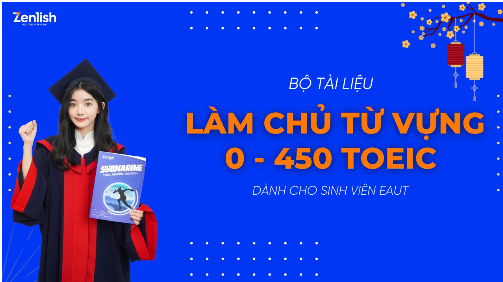

Trọn điểm TOEIC part 4 với phương pháp học hiểu sâu của Zenlish
Part 4 – Rào cản lên band 900+ và hiện thực của làm bài bằng keywords (cả Reading và Listening)

TÀI LIỆU TOEIC 4 KỸ NĂNG DÀNH CHO NGƯỜI MỚI BẮT ĐẦU HỌC TOEIC
Tài liệu luyện thi TOEIC luôn là công cụ cần thiết để hỗ trợ cho các bạn ôn thi TOEIC đạt kết quả cao nhất. Trong bài viết này, Zenlish sẽ chia sẻ chi tiết và cụ thể hơn cho các bạn đang học TOEIC để giúp các bạn tự tin chinh phục điểm TOEIC 4 kỹ năng.

Cách tính điểm bài thi TOEIC Speaking & Writing mới nhất 2023
Tại Việt Nam, kỳ thi TOEIC chính được tổ chức là thi 2 kỹ năng Reading và Listening, ngoài ra đối với một số cá nhân có nhu cầu cao hơn trong công việc có thể tham gia thêm bài thi TOEIC Speaking và Writing.
TÀI LIỆU HỌC TOPIC
ETS 2024 – BỘ ĐỀ NGƯỜI HỌC TOEIC CHẮC CHẮN KHÔNG THỂ BỎ QUA
VINH DANH HỌC VIÊN